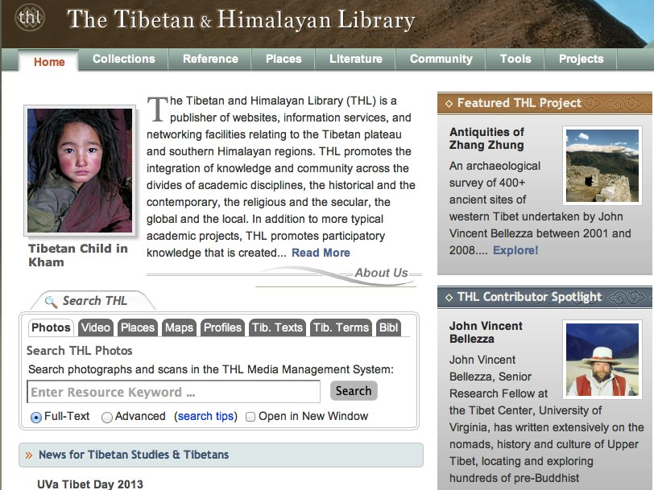

David Germano, “Tibetan Community, Culture, Collections, and Contexts: Digital Services and Participatory ApproacheS”
David Germano teaches Tibetan and Buddhist Studies at the University of Virginia. His research focuses on eighth through fourteenth century Tibetan religious and intellectual movements, as well as their broader historical contexts. He directs the UVa Tibet Center and the Tibetan and Himalayan Library” since 2000, a major international initiative aimed at stimulating and publishing innovative research on the region. Since 2008, he is directing the new SHANTI program promoting innovation in social sciences, humanities, and the arts at the University of Virginia.
David Germano

Saturday, September 28, 2013
David Germano, “Tibetan Community, Culture, Collections, and Contexts: Digital Services and Participatory ApproacheS”
The University of Virginia has led a large scale initiative - the Tibetan and Himalayan Library (www.thlib.org) - for the last fifteen years aiming at leveraging digital technology to explore new approaches to "collection" in relationship to local culture and community in Tibetan and Himalayan regions in Asia. Innovative aspects of this work include the development of new approaches to oral and embodied knowledge through the use of multi-lingual and timecoded transcripts allowing easy analysis and granular consultation of such knowledge such as we have come to expect of texts in the digital age for decades now. The same video management system also has a distinctive approach to semantic and geographical indexing. Separate repositories - called "knowledge maps" - have been created of semantic ontologies and geographical feature documentation which allow for highly structured descriptions of subjects and places that can be arranged in flexible interrelationships, as well as visualized in maps and networks. This information is then provided as data services which can be used by other repositories, such as the video management system, to semantically and geographically index their own assets. This then allows for, in this case, oral and embodied knowledge to be linked to place and subject, as well as each other, and other media, in complex ways. Such dynamic and extensive interconnection can then begin to express the complex contexts which they both constitute, and are constituted by, in real communities and cultures, in contrast to the externally imagined and anemic contexts of our standard collection practices. This is further amplified when the both sides of the equation - the rich media and the structured descriptions - are in large part enlivened by participatory approaches which facilitate a publishing continuum that allows for extensive self-representation by community members of diverse backgrounds and sectors, as well as scholarly engagement by people from within and without the region. The presentation will show some of the fruits of these approaches and systems, as well as discuss persistent challenges to such work, including the issue of institutional sustainability of maintaining such collections beyond entrepreneurial and isolated ventures.